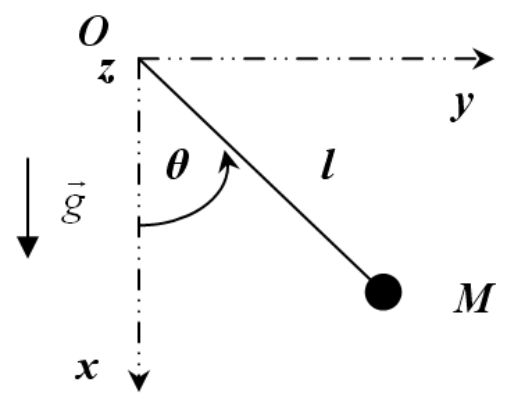

Le pendule
Contents
Le pendule#

Approximation des petits angles#
On considère le pendule simple de la figure ci-dessus, dont l’équation du mouvement libre s’écrit :
et qui dans le cas des petits angles se simplifie : $\(\sin\theta\approx\theta\quad\Rightarrow\quad\frac{\mathrm{d}^{2}\theta}{\mathrm{d}t^{2}}+q\frac{\mathrm{d}\theta}{\mathrm{d}t}+\Omega^{2}\theta=0 \)$
où \(\theta\) est l’angle que fait le pendule par rapport à la verticale, \(\Omega=\sqrt{{g/l}}\) est la pulsation propre et \(q\) est le terme de frottement fluide. On utilisera par commodité la valeur suivante : \(\Omega=1\) \(\mathrm{rad\cdot s^{-1}}\).
Résolvez cette équation linéarisée (\(\frac{\mathrm{d}^{2}\theta}{\mathrm{d}t^{2}}+q\frac{\mathrm{d}\theta}{\mathrm{d}t}+\Omega^{2}\theta=0\)) avec la méthode RK4 pour différentes valeurs de l’amortissement : \(q=1\), \(q=2\), \(q=5\mathrm{~s^{-1}}\) et tracez sur un même graphe l’évolution de \(\theta(t)\) dans ces régimes respectivement pseudo-périodique, critique et apériodique.
On prendra comme conditions initiales \(\theta(t=0)=10\mathrm{~°}\) (à convertir en radians) et \(\frac{\mathrm{d}\theta}{\mathrm{d}t}(t=0)=0\) et un pas de temps \(\mathrm{d}t=0.05\mathrm{~s}\) pour \(t\) allant de \(0\) à \(20\mathrm{~s}\).
Force d’excitation#
On ajoute maintenant une force d’excitation au pendule de sorte que l’équation du mouvement s’écrive :
Résolvez cette nouvelle équation avec la méthode RK4 pour une force excitatrice d’intensité \(F_e=1\mathrm{~rad\cdot s^{-2}}\) et de pulsation \(\Omega_e=\frac{2\Omega}{3}\).
Tracez sur un même graphe la trajectoire dans l’espace des phase \(\left(\theta,\frac{\mathrm{d}\theta}{\mathrm{d}t}\right)\) pour le pendule libre (\(q=0\) et \(F_e=0\)), amorti (\(q=1\) et \(F_e=0\)), et amorti avec excitation (\(q=1\) et \(F_e=1\)).
On prendra toujours comme conditions initiales \(\theta(t=0)=10\mathrm{~°}\) (à convertir en radians) et \(\frac{\mathrm{d}\theta}{\mathrm{d}t}(t=0)=0\).
Commentez la forme des trajectoires que vous observez.
Mouvement chaotique#
Lorsque l’on ne fait plus l’hypothèse des petits angles (\(\sin\theta\approx\theta\)), on obtient une équation différentielle d’ordre 2 qui n’est pas linéaire : $\( \frac{\mathrm{d}^2\theta}{\mathrm{d}t^2}+q\frac{\mathrm{d}\theta}{\mathrm{d}t}+\Omega^2\sin\theta=F_e\sin(\Omega_e t) \)$
Pour certaines valeurs des paramètres physiques, le comportement du pendule sera chaotique. Afin d’illustrer ce comportement, on se placera dans les conditions suivantes : \(\theta(t=0)=10\mathrm{~°}\) (à convertir en radians) et \(\frac{\mathrm{d}\theta}{\mathrm{d}t}(t=0)=0\), \(\Omega_e=2\Omega/3\), \(q=0.5\mathrm{~s^{-1}}\).
Résolvez l’équation du mouvement non-linéaire avec la méthode RK4 pour les valeurs suivantes de l’amplitude d’excitation : \(F_e=\{1.4,1.44,1.465,1.5\}\mathrm{~rad\cdot s^{-2}}\).
Tracez \(\theta(t)\) sur un temps de \(100\mathrm{~s}\).
Ajoutez deux tests if dans la boucle après l’appel à rk4 pour maintenir l’angle \(\theta\) dans l’intervalle \([-\pi;\pi]\).
Que constatez-vous au sujet de la période du pendule ? (Attention, périodique \(\neq\) sinusoïdal…)
Dans le cas \(F_e=1.5\mathrm{~rad\cdot s^{-2}}\), calculez l’évolution de \(\theta(t)\) pour deux conditions initiales très proches l’une de l’autre : \(\theta(t=0)=10\mathrm{~°}\) et \(\theta(t=0)=9.999\mathrm{~°}\). Tracez la valeur absolue de la différence entre les deux solutions en fonctions du temps en échelle semi-logarithmique.